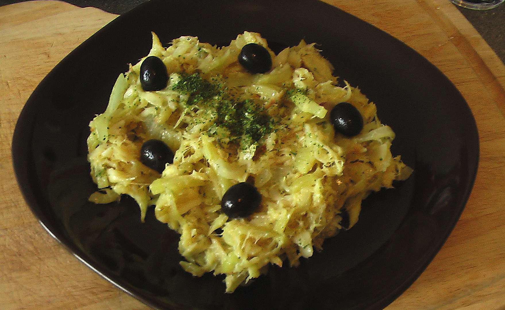
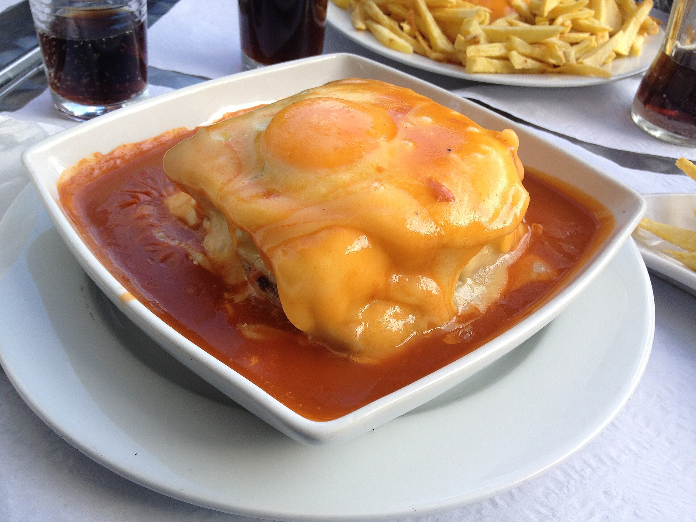
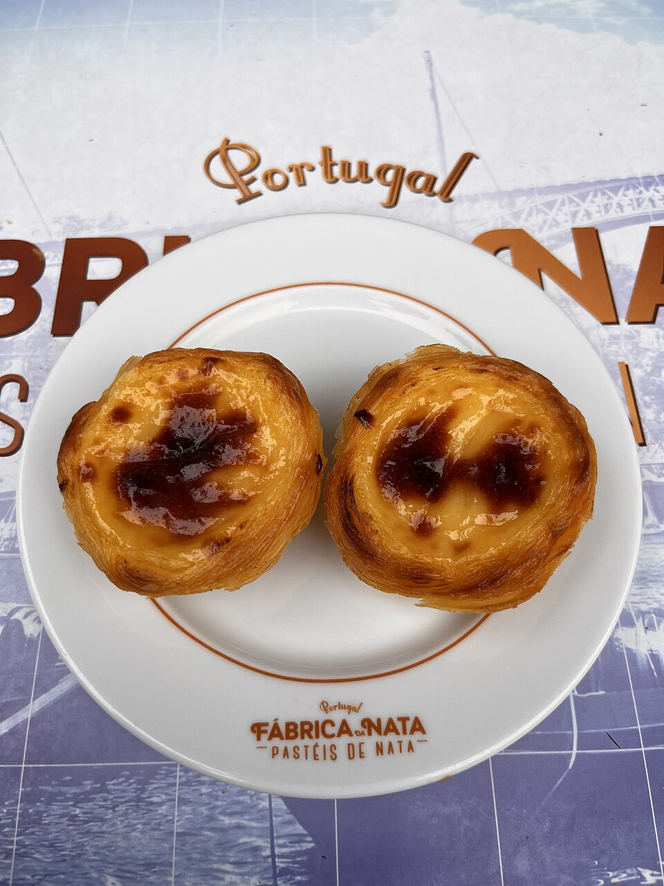
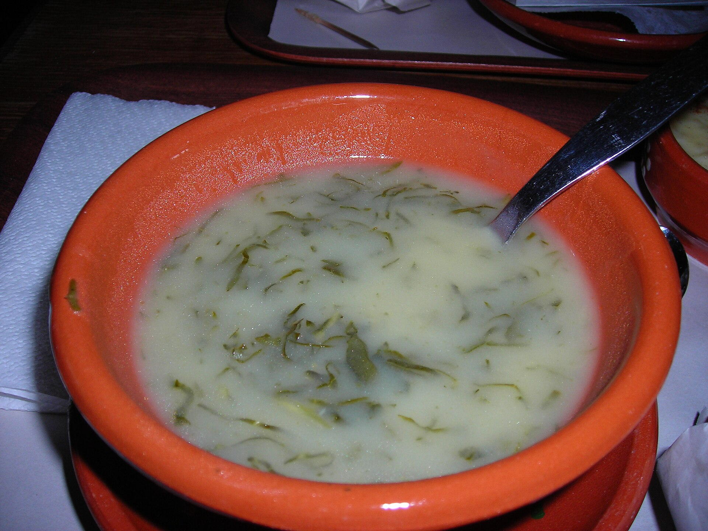

Portugal

Entre cidades históricas, praias e paisagens insulares, Portugal reúne patrimônio cultural, tradições e sabores. Conheça alguns dos destinos que fazem parte dessa viagem.
Localizado no sudoeste da Europa, na Península Ibérica, Portugal encanta pela combinação de história, arquitetura, natureza e gastronomia. Sua ligação com o Oceano Atlântico marcou profundamente a cultura e a identidade do país.
Em Lisboa, a capital, bairros históricos, monumentos e miradouros revelam séculos de história. Já o Porto, às margens do rio Douro, destaca-se pelas construções históricas, pelas paisagens ribeirinhas e pela tradição vinícola.
Sintra surpreende com seus palácios e jardins, enquanto Coimbra preserva uma importante tradição universitária. Ao norte, Braga reúne monumentos religiosos e expressões marcantes da arquitetura portuguesa.
Para os amantes da natureza, o Algarve oferece praias cercadas por falésias e formações rochosas impressionantes. Nos Açores e na Madeira, as paisagens vulcânicas, as montanhas e a vegetação proporcionam experiências únicas.
A gastronomia também faz parte dessa descoberta, com especialidades como bacalhau, pastéis de nata, frutos do mar e os tradicionais vinhos portugueses.
Explorar Portugal é conhecer um país onde o patrimônio histórico, as tradições culturais e as belezas naturais se encontram, oferecendo diferentes experiências aos visitantes.
🏙️ Cidades históricas
Lisboa combina bairros históricos, miradouros e monumentos como a Torre de Belém. No Porto, a Ribeira destaca a relação da cidade com o rio Douro.
Sintra é conhecida por seus palácios e pela paisagem da serra, com destaque para o Palácio da Pena. Coimbra reúne tradição universitária e ruas históricas, enquanto Braga abriga o Santuário do Bom Jesus do Monte e sua monumental escadaria.
🌊 Paisagens naturais
O Algarve oferece praias, falésias e formações costeiras, como as Grutas de Benagil. Nos Açores, a Lagoa das Sete Cidades é um dos destaques da ilha de São Miguel.
A Madeira reúne montanhas, vegetação e caminhos junto às levadas. O vale do Douro completa o roteiro com paisagens de vinhedos nas encostas do rio.

Grutas de Benagil — Algarve
A luz natural revela as formas rochosas desta paisagem costeira do Algarve.

Lagoa das Sete Cidades — Açores
Águas e encostas verdes compõem a paisagem vulcânica da ilha de São Miguel.
Consulte a autoria e as licenças em “Créditos das fotografias”, ao final da galeria de Portugal.
🍷 Gastronomia portuguesa
A gastronomia portuguesa é uma das grandes expressões culturais do país, reunindo receitas tradicionais, ingredientes frescos e sabores influenciados pela proximidade com o Oceano Atlântico. Peixes, frutos do mar, azeite, legumes e ervas aromáticas estão presentes em diversas especialidades, refletindo a riqueza da culinária regional.
O bacalhau ocupa um lugar especial na cozinha portuguesa, sendo preparado de diferentes maneiras. Entre as receitas mais conhecidas está o Bacalhau à Brás, feito com bacalhau desfiado, batata palha e ovos. Outro destaque são as sardinhas assadas, especialmente populares durante as festas dos Santos Populares, quando ruas e bairros se enchem de celebrações tradicionais.
No norte do país, o caldo verde é uma sopa tradicional preparada com batata e couve cortada em tiras finas, frequentemente acompanhada de broa. Na cidade do Porto, a francesinha tornou-se uma especialidade gastronômica, combinando pão, carnes, queijo derretido e um molho característico.
A doçaria portuguesa também merece destaque. Os famosos pastéis de nata, preparados com massa folhada e recheio cremoso, são encontrados em pastelarias de diferentes regiões. Além deles, doces como pão de ló, arroz-doce e outras receitas de tradição conventual fazem parte da identidade gastronômica portuguesa.
Os vinhos completam essa experiência. Portugal possui regiões vinícolas reconhecidas, como o Douro, famoso pelos seus vinhedos e pela produção do vinho do Porto. Cada região apresenta sabores e tradições que ajudam a contar a história do país.
Conhecer a gastronomia de Portugal é também descobrir seus costumes, suas celebrações e a maneira como diferentes gerações preservam receitas e compartilham experiências à mesa.


Bacalhau à Brás
Bacalhau desfiado, batata palha e ovos compõem esta especialidade portuguesa.
Foto: Fpenteado (Wikipédia em inglês) — CC BY-SA 3.0. Arquivo original sem alterações.


Francesinha
Especialidade do Porto, com pão, carnes, queijo derretido e molho.
Foto: Moisun — Domínio público. Crédito voluntário. Imagem redimensionada.



Pastel de nata
Massa folhada e recheio cremoso caracterizam este tradicional doce português.
Foto: TheDumpy — CC BY-SA 4.0. Imagem redimensionada.


Caldo verde
Sopa de batata e couve cortada em tiras finas, tradicional na cozinha portuguesa.
ℹ️ Informações úteis
- Capital
- Lisboa
- Idioma oficial
- Português
- Moeda
- Euro (€)
- Principais destinos
- Lisboa, Porto, Sintra, Coimbra, Braga, Algarve, Açores e Madeira.
📸 Fotografias de Portugal
Veja as seis fotografias dos destinos apresentados, com seus respectivos créditos.
→ Ver fotografias na galeria de Portugal
Fontes e referências
- TURISMO DE PORTUGAL. Visit Portugal. [S. l.]: Turismo de Portugal, c2013. Disponível em: https://www.visitportugal.com/. Acesso em: 10 out. 2026.
- UNESCO. Portugal. [S. l.]: UNESCO World Heritage Centre, [20--]. Disponível em: https://whc.unesco.org/en/statesparties/pt. Acesso em: 10 out. 2026.
- TURISMO DE PORTUGAL. Gastronomia e Vinhos. [S. l.]: Turismo de Portugal, c2013. Disponível em: https://www.visitportugal.com/pt-pt/experiencias/gastronomia-e-vinhos. Acesso em: 10 out. 2026.
- TURISMO DE PORTUGAL. Tempo para saborear Portugal. [S. l.]: Turismo de Portugal, c2013. Disponível em: https://www.visitportugal.com/pt-pt/content/tempo-para-saborear-portugal. Acesso em: 10 out. 2026.
- TURISMO DE PORTUGAL. Gastronomia do Porto e Norte. [S. l.]: Turismo de Portugal, c2013. Disponível em: https://www.visitportugal.com/pt-pt/node/73749. Acesso em: 10 out. 2026.
- VISIT PORTO. Global Kitchen. [S. l.]: Visit Porto, [20--]. Disponível em: https://visitporto.travel/pt-PT/global-kitchen. Acesso em: 10 out. 2026.